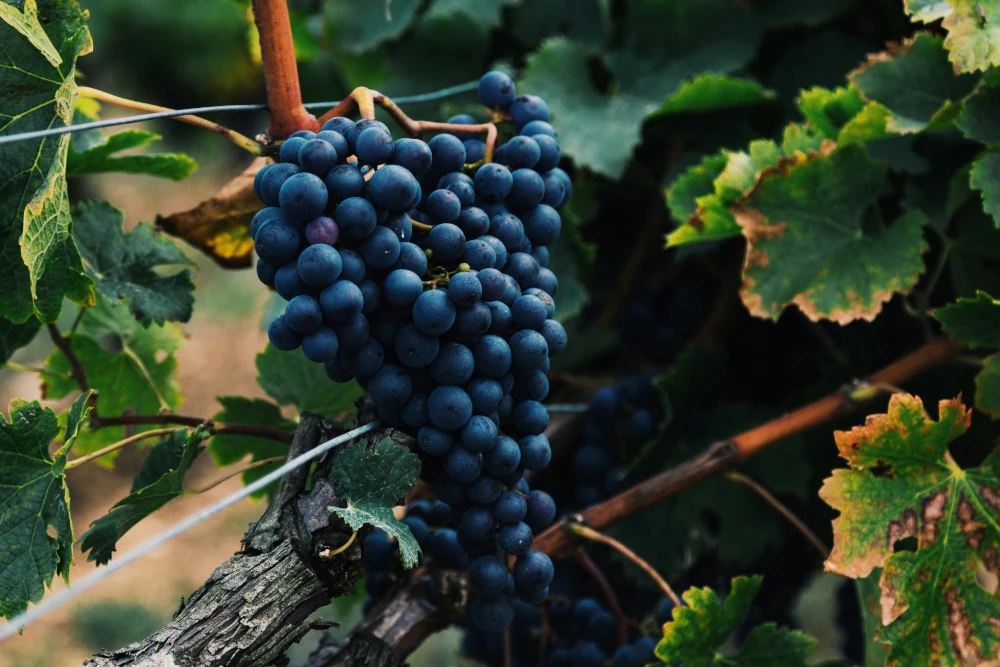

Ribera del Duero
2024-05-31
Spanien har hela 11 vindistrikt och ett utav dom som har mycket bra viner är Ribera del Duero som ligger i norra delen i regionen Kastilien och León. Här har man gjort viner i flera tusen år men området blev känt i och med Benedikt munkarna på 1200-talet. Här görs mestadels röda viner och majoriteten av druvorna som odlas är Tempranillo eller Tinto Fino som det även kallas. Det är många vinälskare som tycker att det här är Spaniens allra bästa vindistrikt. Vinerna har ofta en mörk djup ton och domineras i smak utav bär som björnbär, plommon, röda bär men också tobak, kryddor och vanilj.
Hit kan man åka för en vinresa, vår eller höst rekommenderas eftersom somrarna ofta är extremt varma och vintrarna kan vara rätt kalla eftersom det ligger på en platå. Varför inte kombinera resan med en tur till staden Burgos eller Valladolid för att se lite mer av Spanien. På flera utav vingårdarna har dom även restauranger där dom serverar lokalproducerad mat och t ex lamm. Den allra kändaste vinproducenten är Vega Sicilia som funnits sedan 1800-talet. Om man inte vill åka på en vinresa till Spanien finns det även en del Ribera del Duero viner att välja på hos Systembolaget.
Här kommer några tips på vingårdar man kan besöka i regionen:
- Bodega Bela
- Bodegas Valdubón
- Bodegas Legaris
- Bodegas Valdubón
- Bodegas Legarisfrisk och bärig smak med inslag av röda vinbär, hallon, kryddor, smultron och grapefrukt.
- Enzo Bartoli, 2023, Italein, 139:-bärig och frisk smak med inslag av vattenmelon, persika, röda vinbär och blodgrapefrukt.
- Pink Hill, 2023, Portugal, 85:-pärlande, friskt, ungdomligt vin med inslag av vattenmelon, smultron, hallon och blodapelsin.
Önskar er en underbar höst!